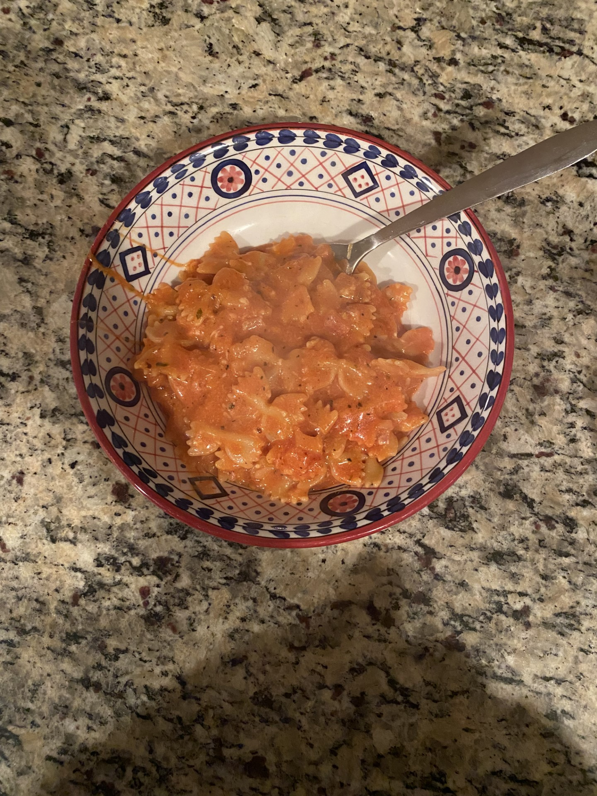
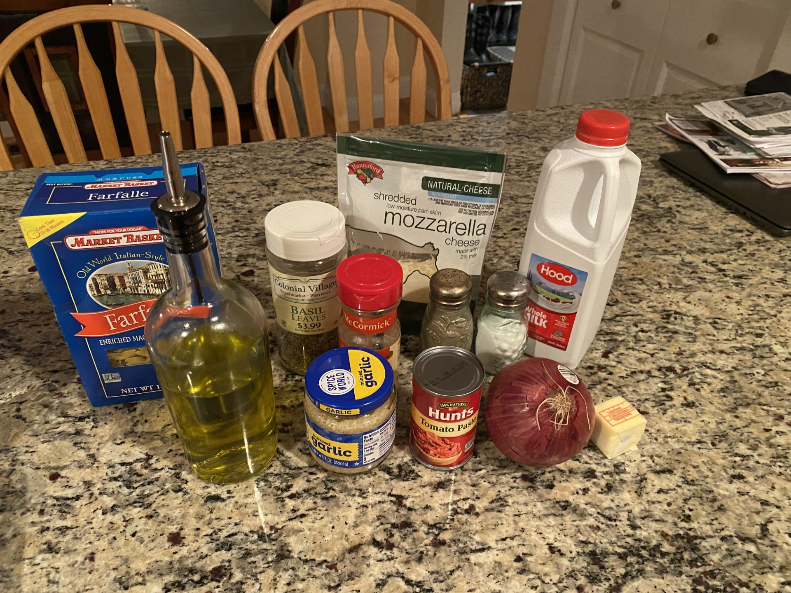

I choose to make this pasta dish because I keep seeing it on social media and I think this recipe is very beginner friendly. My sister has made this recipe before and mentioned that it is easy and really good.
My Rating of this Recipe: 8/10
I do have made pasta before so making this recipe for me was not difficult at all and it was very fun to make.

Listed below are the ingredients and instructions I followed to make this recipe at Get on my Plate.
Ingredients Necessary:
- 1 box pasta
- 1/2 cup olive oil
- salt and pepper
- 1 red onion
- 1/2 cup tomato paste
- 1 cup heavy cream
- 2 teaspoons red pepper flakes
- 2 tablespoons butter
- 1/2 cup paresan cheese
- 1/2 teaspoon salt
- Optional Toppings: more parmesan cheese, more salt, and fresh basil

Instructions:
- Cook pasta and drain when done (pasta should be soft).
- While the pasta is cooking over medium heat add olive oil to a large pan, once hot add your chopped up onions. Cook for 2-3 minutes, add garlic and cook for another minute. Stir often.
- Add tomato paste then cook for another 2-3 minutes, stir often, paste should turn a darker color.
- Add heavy cream and red pepper flakes. Cook 1-2 minutes stir often until sauce thickens.
- Add in pasta - add 1/2 cup of the pasta water and add butter. Stir until the butter is melted. If the pasta sauce seems to thick add more pasta water.
- Stir in parmesan cheese. Add additional toppings if interested.
- Serve and Enjoy!
Personal Insights:
I do have experience making pasta so this recipe was really easy and a good thing to try. My mom and I both really liked this recipe and I plan on making again in the future.
I did have to susbsitute the heavy cream for whole milk because I forgot to get it, but it was still was very good!